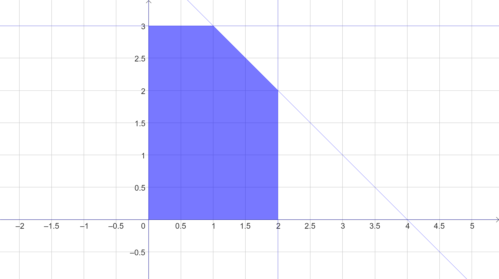
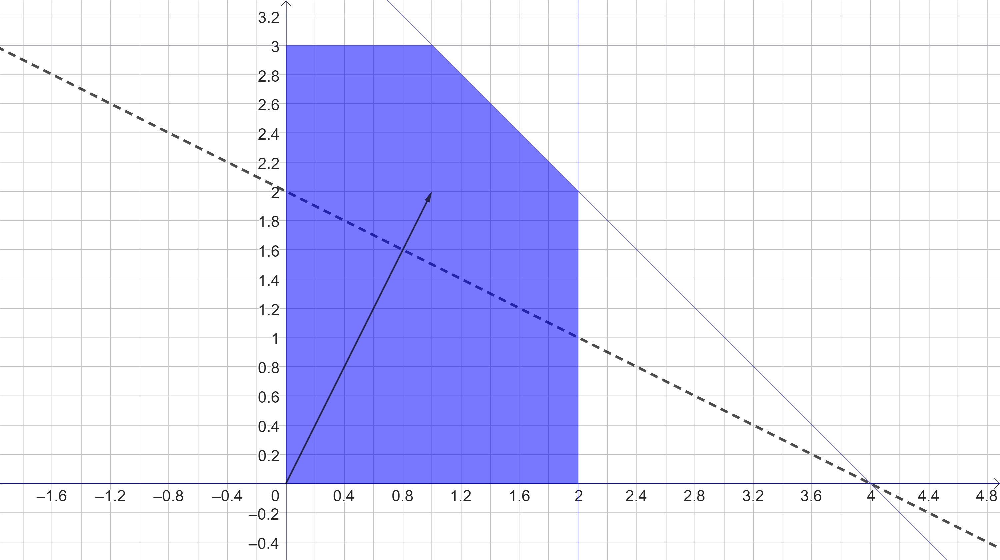
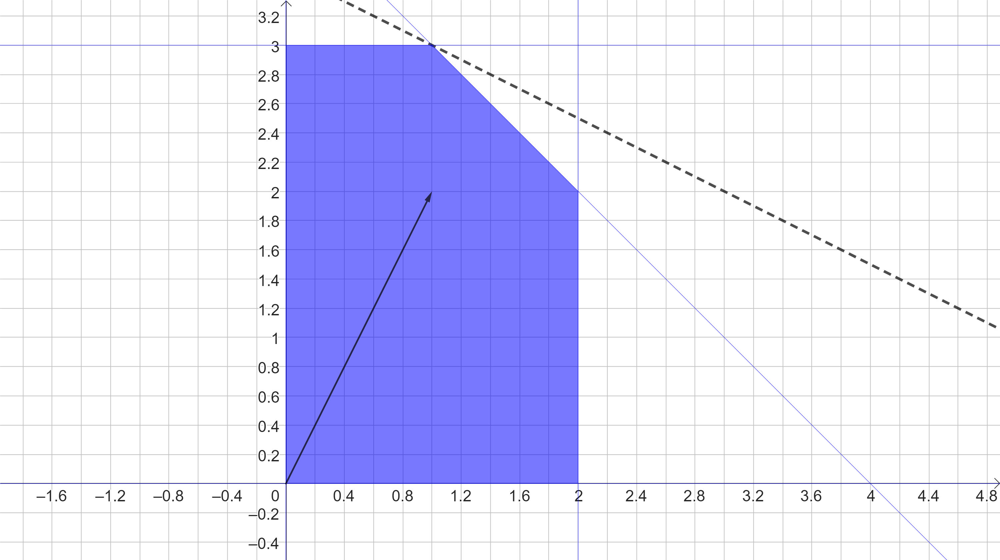
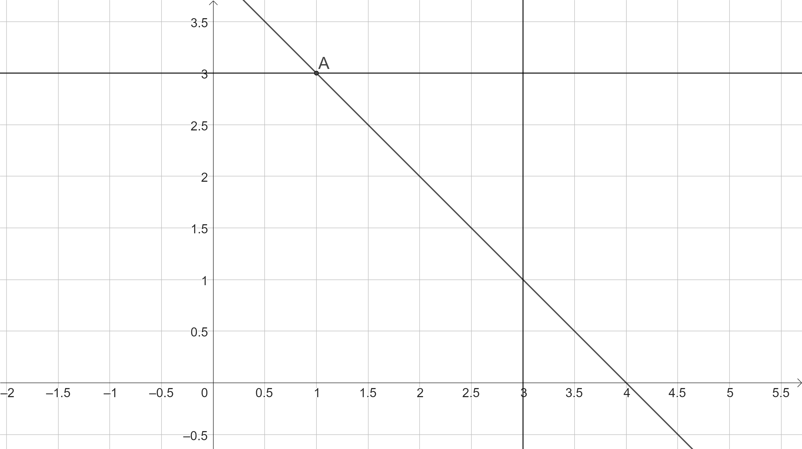
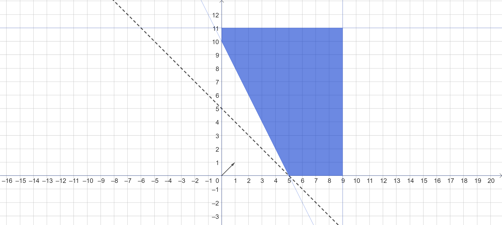

Chapter 3 Método gráfico para PL
“Resolver” um PL quer dizer encontrar valores para o conjunto de variáveis, de tal forma que todas as restrições (equações/inequações) sejam satisfeitas e a função objetivo seja otimizada (maximizada ou minimizada). Para problemas com 2 variáveis esse processo pode ser feito gráficamente.
Por convenção, podemos representar uma solução como um vetor \(x^T = [x_1,x_2,...,x_n]\), em que cada \(x_i, i = 1,...,n\) é o valor de uma variável. Note que \(x\) é um vetor coluna, por isso a notação do transposto ao escrevê-lo como uma linha.
Definição (solução factível e região factível): Uma solução \(x^T = [x_1,x_2,...,x_n]\) é dita factível se satisfizer todas as restrições e as condições de não negatividade de um PL. O conjunto de todas as soluções factíveis de um PL é chamado de região factível (S).
3.1 Método de resolução
Para resolver um PL pelo método gráfico, basta fazer:
- Encontre a região factível \(S\) do PL: Represente as equações/inequações do PL, como mostrado na revisão de algebra.
- Vetor gradiente: Encontre o vetor gradiente da função objetivo e represente-o gráficamente.
- Curva de nível: Represente uma curva de nível da função objetivo (lembre-se de que a curva de nível sempre será perpendicular ao vetor gradiente).
- Empurrar/puxar a curva: Considerando um problema de maximização, “empurre” a curva de nível pela região factível S até o limite, na direção do vetor gradiente, sem deixar a região (para problemas de minimização, puxar a curva, ou seja, empurrar no sentido contrário do vetor gradiente).
- Restrições limite: No limite da região factível, a curva de nível toca uma ou mais restrições do PL. Definir quais.
- Para as restrições encontradas, resolva o sistema como se todas fossem equações (mesmo que sejam inequações). O ponto de intersecção é o ponto que maximiza a função objetivo.
OBS: Em algumas situações vários pontos parecem ser extremos, nesses casos, resolva os sistemas para cada um, calculando os valores da função objetivo. Escolha o ponto que otimiza a função.
EXEMPLO 1 Encontre a solução do modelo de PL pelo método gráfico:
\[\begin{align} \text{max $f$ = } & x_1 + 2x_2 \\ s.a &\\ & x_1 + x_2 \leq 4\\ & x_1 \quad \quad \leq 2 \\ & \quad \quad x_2 \leq 3 \\ & x_1, x_2 \in \mathbb{R}^2 \end{align}\]SOLUÇÃO
Primeiro representamos a região factível \(S\), como na Figura abaixo:

Em seguida representamos o vetor gradiente e uma curva de nível, como mostrado abaixo (a curva de nível está tracejada e foi calculada com $k = 4$):

Como o problema é de máximização, **empurramos** a reta da curva de nível (sempre perpendicular ao vetor gradiente) até o extremo da região factível:

Conseguimos verificar que a reta está na interesecção das restrições:
\[\begin{align} & x_1 + x_2 \leq 4\\ & \quad \quad x_2 \leq 3 \\ \end{align}\]
Agora só precisamos resolver o sistema com as duas restrições como se fossem equações:
\[\begin{cases} x_1 + x_2 = 4 \\ \quad \quad x_2 = 3 \end{cases}\]Aplicando a operação:
\(L_1 \leftarrow L_1 - L_2\)
Temos o sistema equivalente:
\[\begin{cases} x_1 \quad \quad = 1 \\ \quad \quad x_2 = 3 \end{cases}\]Portanto a solução ótima do PL é \(x^T = [x_1,x_2] = [1,3]\), com função objetivo de valor 7.
VER NO GEOGEBRA
EXEMPLO 2 Encontre a solução do modelo de PL pelo método gráfico:
\[\begin{align} \text{min $f$ = } & x_1 + x_2 \\ s.a &\\ & 4x_1 + 2x_2 \geq 20\\ & x_1 \quad \quad \quad \leq 9 \\ & \quad \quad \quad x_2 \leq 11 \\ & x_1, x_2 \in \mathbb{R}^2 \end{align}\]SOLUÇÃO
Plotando a região factível, uma curva de nível e o vetor gradiente, temos:

Lembrando que neste caso o problema é de minimização, portanto devemos empurrar a curva de nível no sentido contrário ao vetor gradiente. Temos que o ponto ótimo está na intersecção das retas:
\[\begin{cases} 4x_1 + 2x_2 = 20 \\ \quad \quad x_2 = 0 \end{cases}\]Portanto a solução ótima do PL é \(x^T = [x_1,x_2] = [5,0]\), com função objetivo de valor 5.
VER NO GEOGEBRA
3.2 Casos especiais
Diversos cenários podem ocorrer durante a resolução de um modelo de PL. Analisando gráficamente fica mais fácil compreender os casos genéricos. Veremos as possibilidades considerando dois aspectos:
- Região factível \(S\): limitada/ilimitada/inexistente
- Solução ótima: única/múltiplas/inexistente (sol. ilimitada)
Juntamente com o vetor gradiente.
3.2.1 A. \(S\) ilimitado, solução ótima única
Considere o modelo:
\[\begin{align} \text{max $f$ = } & -2x_1 + x_2 \\ s.a &\\ & -x_1 + x_2 \leq 2\\ & x_1, x_2 \in \mathbb{R}^2 \end{align}\]Neste caso, embora a região factível seja ilimitada, o PL têm solução ótima única.
3.2.2 B. Infinitas soluções ótimas
Considere o modelo abaixo:
\[\begin{align} \text{max $f$ = } & -x_1 + x_2 \\ s.a &\\ & -x_1 + x_2 \leq 2\\ & x_1, x_2 \in \mathbb{R}^2 \end{align}\]Neste caso, todos os pontos na reta da restrição são soluções ótimas (inclusive a intersecção com \(x_2\)). As curvas de nível são paralelas à restrição.
3.2.3 C. Problema infactível
Quando não existe região factível, o problema é dito infactível. Considere o modelo:
\[\begin{align} \text{max $f$ = } & x_1 + x_2 \\ s.a &\\ & x_1 \leq 2\\ & x_1 \geq 3\\ & x_1, x_2 \in \mathbb{R}^2 \end{align}\]Obviamente não existe região factível (\(S = \emptyset\)), portanto o modelo é infactível.
3.2.4 D. Problema ilimitado
Quando a direção da solução ótima (considerando o vetor gradiente) aponta para uma região ilimitada, dizemos que o problema é ilimitado. Note, isso não quer dizer que o problema não tem solução, na verdade existe soluções factíveis que podem maximizar (ou minimizar) a função objetivo de forma ilimitada, nenhuma restrição trava a solução. Considere o modelo:
\[\begin{align} \text{max $f$ = } & x_1 + x_2 \\ s.a &\\ & -x_1 + x_2 \leq 2\\ & x_1, x_2 \in \mathbb{R}^2 \end{align}\]3.2.5 D. Problema degenerado
Um problema é dito degenerado quando algum ponto extremo da região factível pode ser definido por mais do que um conjunto de restrições. Considere o PL:
\[\begin{align} \text{max $f$ = } & x_1 + x_2 \\ s.a &\\ & x_1 + x_2 \leq 10 \\ & x_1 + 2x_2 \leq 15 \\ & \quad \quad \quad x_2 \leq 5 \\ & x_1, x_2 \in \mathbb{R}^2 \end{align}\]Note que neste caso o ponto A pode ser definido por 3 conjuntos distintos de restrições:
\[\begin{cases} & x_1 + x_2 = 10 \\ & x_1 + 2x_2 = 15 \\ \end{cases}\] \[\begin{cases} & x_1 + x_2 = 10 \\ & \quad \quad \quad x_2 \leq 5 \\ \end{cases}\]E
\[\begin{cases} & x_1 + 2x_2 \leq 15 \\ & \quad \quad \quad x_2 \leq 5 \\ \end{cases}\]Portanto o problema é degenerado. Esse tipo de problema afeta o desempenho do algoritmo Simplex (usado para resolver PLs de forma genérica).
3.3 Exercicios
3.3.1 Exercicio 1
Um fazendeiro precisa decidir quanto plantar de café e soja na sua região (em toneladas). Para plantar 1 ton. de café, o fazendeiro usa 1 hora de uma máquina alugada , e para plantar 1 ton. de soja, 2 horas da máquina. A máquina foi alugada por 4 horas (porém não precisa ser utilizada durante todo o período) e o fazendeiro precisa plantar 3 toneladas exatas no dia (considerando café e soja). Sabe-se que cada ton. de café plantada gera um lucro de 2 mil reais, e cada ton. de soja 3 mil. Encontre o PL e a solução ótima para o problema do plantio de soja do fazendeiro.